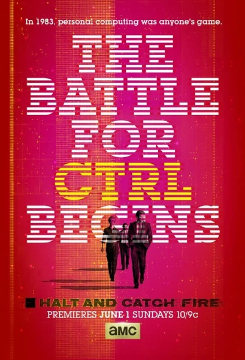

Сериал · 2014 · Драма, История
Сериал о начале PC-революции и конкурентной игре инженеров и маркетологов 80-х. Драма о зарождении стека технологий и о том, кто и как писал первую страницу истории компьютеров.
A series about the start of the PC revolution and the engineers and marketers of the 80s battling to shape it. A drama about who really wrote the first pages of computing history.
← Вернуться в каталог IT Movies